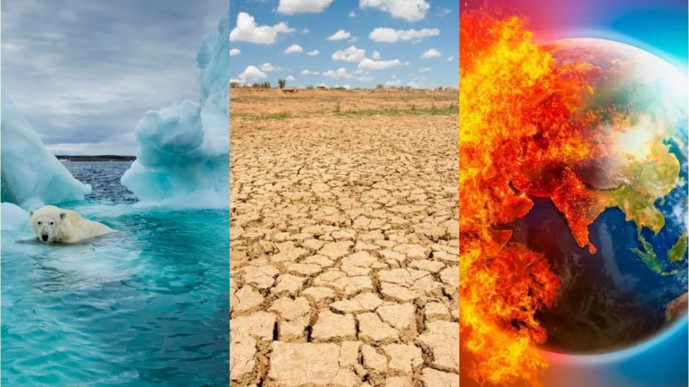

Threats to Biodiversity
Understanding the mounting crisis that threatens all life on Earth
Endangered Species Explorer
Our Fragile Web of Life
Without nature, we are nothing. Yet humans are destroying the environment and the living creatures that call our planet home at unprecedented rates — at our own peril. From increasing the threat of disease to disrupting our global food chain, biodiversity loss across the globe is threatening the very foundation of our future and the well-being of everyone, everywhere.
The devastating effects of climate change on human health are already on display: famines triggered by once-in-a-century droughts or flooding; death and suffering wrought by some of the strongest hurricanes and heat waves in modern history.
But what is less well known is how biodiversity loss is harming our health and threatening the basic ecological cycles that keep us alive.
"Humanity has become a weapon of mass extinction. ... And ultimately, we are committing suicide by proxy." — UN Secretary-General António Guterres
One reporter called biodiversity loss a "mounting under-the-radar crisis," and disturbing signs are appearing all over the globe, from beaches awash in sargassum seaweed to massive fish die-offs in polluted waterways. In fact, according to the United Nations Environment Programme, biodiversity is declining faster than at any other time in human history. Right now more than 1 million species are facing extinction.

Habitat Destruction
One-third of the planet's land is now degraded, making it harder to feed our growing global population. Forests, wetlands, and other critical ecosystems are being cleared at alarming rates.
Unsustainable Practices
Industrial practices like oil drilling, fracking, mining, and factory farming are destroying ecosystems while displacing, contaminating, and killing countless species.
Overexploitation
Overfishing, illegal wildlife trade, and unsustainable harvesting are pushing many species to the brink of extinction and disrupting delicate ecological balances.
Climate Change
Rising temperatures, ocean acidification, and extreme weather events are disrupting ecosystems and threatening species that cannot adapt quickly enough.
Zoonotic Spillover
Habitat destruction brings humans and wildlife into closer contact, dramatically increasing our risk of exposure to pathogens that jump from animals to humans.
Pollution
Plastic pollution, chemical runoff, and air pollution are poisoning our land, water, and air, harming both wildlife and human health.
Biodiversity Impact Calculator
Environmental Impact
Global Biodiversity Protection Timeline
28 February 2025
Positive outcome of COP16 biodiversity negotiations. A follow-up meeting resulted in adoption of strategy for resource mobilisation and enhanced monitoring framework.
EU welcomes positive outcome of COP16 biodiversity negotiations in Rome14 October 2024
UN biodiversity convention: EU reaffirms global pledge to protect a third of the planet by 2030. Council approved conclusions for COP16 negotiations.
UN biodiversity convention: EU reaffirms global pledge to protect a third of the planet by 203017 June 2024
Council gives final green light to nature restoration law, aiming to restore at least 20% of EU's land and sea areas by 2030.
Nature restoration law: Council gives final green light9 November 2023
Council and Parliament reach agreement on new rules to restore and preserve degraded habitats in the EU.
Nature restoration: Council and Parliament reach agreement on new rules20 June 2023
Council reaches agreement on the nature restoration law, setting specific legally binding targets for nature restoration.
Council reaches agreement on the nature restoration law20 December 2022
Restoring nature: ministers discuss 2030 targets and held policy debate on nature restoration regulation.
Environment Council, 20 December 20227-19 December 2022
New global framework for biodiversity adopted at UN summit COP15 with historic Kunming-Montreal global biodiversity framework.
EU at COP15 (European Commission)29 November 2022
EU and ACP countries call for ambitious agreement to protect biodiversity at COP15 meeting.
COP15: EU and OACPS call for ambitious global agreement24 October 2022
Council agrees on EU position for UN biodiversity summit, calling for ambitious global biodiversity framework.
Environment Council, 24 October 202216 March 2021
LIFE programme – Council adopts its position at first reading for 2021-2027, EU's flagship programme for nature and biodiversity protection.
LIFE programme – Council adopts its position at first reading17 December 2020
LIFE programme: Council presidency reaches provisional political agreement with Parliament on extension beyond 2020.
LIFE programme – Council Presidency reaches provisional agreement23 October 2020
Council adopts conclusions on the EU biodiversity strategy for 2030, endorsing objectives and recognising need to step up efforts.
Council adopts conclusions on EU biodiversity strategy for 203021 September 2020
UN Biodiversity Summit: Council sends united signal to step up global ambition for biodiversity, endorsing Leaders' Pledge for Nature.
8 June 2020
EU agriculture ministers welcome Commission's biodiversity strategy as part of European Green Deal.
19 December 2019
Council adopts conclusions on biodiversity, calling for ambitious 2030 EU biodiversity strategy as central element of European Green Deal.
Biodiversity - Council adopts conclusions9 October 2018
Biodiversity: Council adopts conclusions expressing deep concern about natural resource base and calling for ambitious strategic plan beyond 2020.
Biodiversity: Council adopts conclusions17 October 2016
Conclusions ahead of meeting of parties to Convention on Biological Diversity, stressing need to act at international level to halt biodiversity loss.
Environment Council, 17 October 201616 December 2015
Conclusions on mid-term review of EU biodiversity strategy, pointing out areas where further work needed to reach targets.
Environment Council, 16 December 201515 March 2010
EU sets headline target on halting the loss of biodiversity by 2020 and vision for better protection by 2050.
Council conclusions on EU and global vision for biodiversity22 December 2009
Council adopts conclusions on international biodiversity beyond 2010, highlighting importance of re-energising political momentum.
Council conclusions on biodiversity beyond 2010
Case Study: The Amazon Rainforest
There are few places on the planet where the threat of biodiversity loss is more evident than the Amazon, which is being destroyed by record levels of deforestation despite being home to one-third of the planet's species — the greatest concentration of biodiversity on Earth.
Because habitat destruction brings humans and wildlife into closer contact, it dramatically increases our risk of exposure to "zoonotic spillover," which occurs when pathogens jump from animals to humans. In fact, more than 75% of emerging infectious diseases in humans are caused by pathogens that originally circulated in animals.
Dr. Alessandra Nava, a veterinary scientist based in the Brazilian city of Manaus, has made the rainforest her laboratory. She has dedicated her career to collecting samples from small mammals for the Fiocruz Amazônia Biobank, part of a growing effort to track the spread of zoonotic pathogens, and perhaps ultimately help predict or even prevent another pandemic.
Her work exemplifies a holistic approach, fittingly dubbed "One Health," that recognizes the indivisible link between animal, human, and environmental well-being.
"When we keep the forest intact, it serves as a buffer zone." — Dr. Alessandra Nava, Veterinary Scientist
Solutions to Protect Biodiversity
Despite these challenges, solutions exist to restore and preserve our planet's ecological well-being:
- Protecting and restoring natural habitats: Conservation is key to maintaining the delicate balance of our ecosystems.
- Prioritizing island nations: Islands host 20% of Earth's species despite covering less than 4% of its surface.
- Supporting sustainable practices: From agriculture to fishing to land use, we need approaches that work with nature.
- Respecting Indigenous knowledge: Indigenous communities have long served as the planet's most effective environmental stewards.
"Without nature, we have nothing. Without nature, we are nothing." — UN Secretary-General António Guterres
Learn How STS Can Help